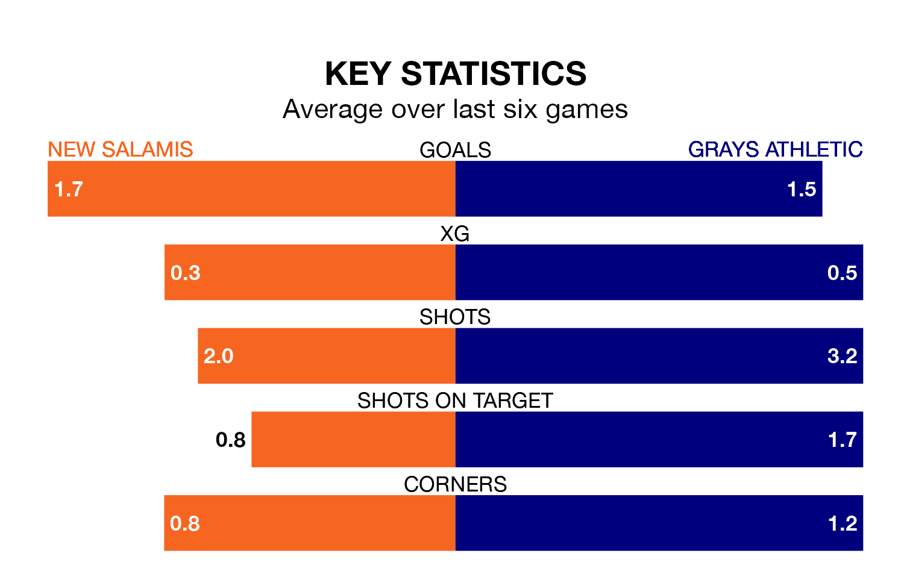

Grays Athletic travel to New Salamis on late Friday in Isthmian League Division One North.
The visitors come into the game on the back of a draw in their last match, having tied with Wroxham 1-1 at home.
New Salamis, meanwhile, lost their last match, 2-1 against Heybridge Swifts.
Grays are 17th in the table after 22 games, of which they have won four and drawn six, earning 18 points.
New Salamis are three places ahead of Athletic in 14th, with five wins and seven draws putting them on 22 points.
With 28 goals in 22 games so far this season, the visitors are scoring at below the league average rate with 1.3 goals per game. And they are conceding more than average, letting in 41 goals at a rate of 1.9 per game.
The home team are also below average scorers, with 1.6 goals per game, compared to a league average of 1.7. They have conceded 2.3 goals per game.
In the last five years, New Salamis and Grays have played each other on five occasions. New Salamis won two of them, Grays one, and they drew twice.
On average, New Salamis scored 2.0 goals and Grays 1.4 in those matches.
Their last meeting was on October 14, when New Salamis won 4-2 away.
New Salamis are in mixed form in Isthmian League Division One North, with two wins and a draw from their last six games.
And also with two wins and a draw over that period, Grays's form is identical – they have both taken seven points from 18.
Updated: 14:59 (UTC), 05/02/24